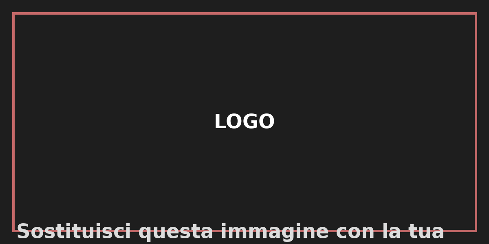
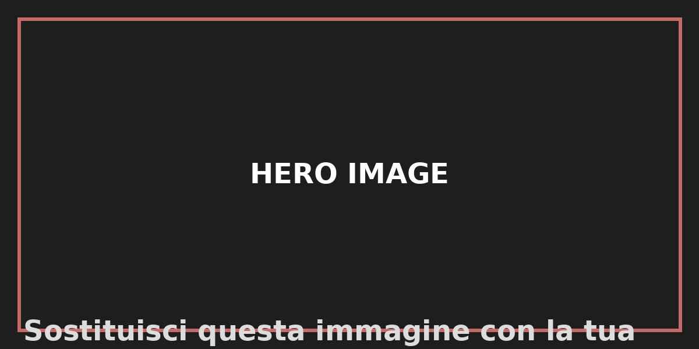

Scopri Polizia, Carabinieri, Vigili del Fuoco, Emergenza Sanitaria e molte altre organizzazioni.

Questo testo è completamente modificabile. Puoi sostituire immagini, logo, favicon e contenuti senza modificare la struttura del sito.